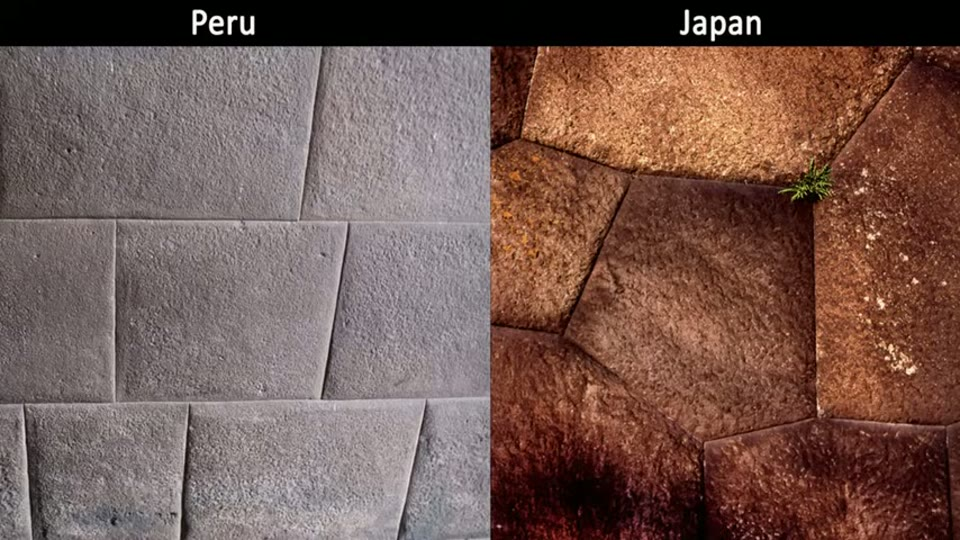
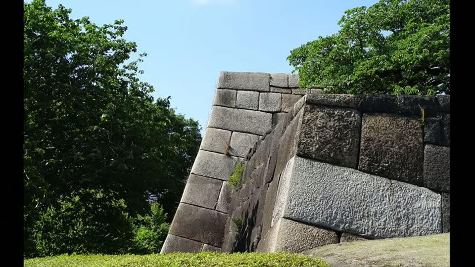
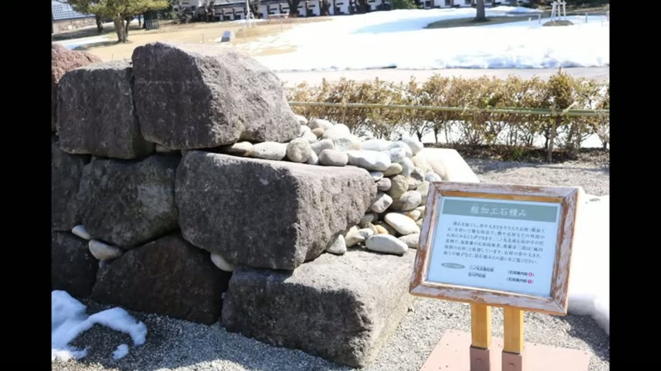

Curious Being
How Japanese Polygonal Megalithic Walls Differ from those in Peru?
Tina · 21 min · watch on YouTube · summarised 2026-08-23
Mortarless polygonal walls with irregular interlocking blocks and joints too tight for a sheet of paper exist in two places with no known contact: Peru — Sacsayhuamán, Cusco, Machu Picchu, Ollantaytambo, credited to the Inca of the 14th and 15th centuries — and Japan, where the same look appears in feudal castle walls from the 17th century onward.
The resemblance is the standard cross-continental argument. This video runs the comparison properly, and the conclusion is that the two are not alike.

Why the comparison gets made at all: at a glance the two are the same wall.
What they share, and where the sharing stops
Both use non-uniform polygonal blocks, no mortar, and very fine joints, and both use large stones 01:40–02:20. From there the differences begin.
Size. Referring to her Osaka Castle video, she notes that the largest Japanese stones — the Octopus Stone included — are slabs rather than blocks, so Peru has the heavier masonry by a wide margin.
Material, and it runs the wrong way for the mystery 02:20–03:10. Edo Castle's polygonal walls are largely andesite, an igneous rock at Mohs 6–7. Sources disagree on the Peruvian walls — some say andesite, others limestone — and she reports watching a geophysicist pour acid over a sample from Sacsayhuamán, which dissolved completely, indicating limestone at Mohs 3–4. On that reading the Japanese masons were working the harder stone.
The part that makes the video trustworthy
Before arguing that hand tools cannot account for Peru, she refuses the usual version of that argument 06:20–07:40.
The standard alternative line is that copper and bronze are no harder than the stone, so they cannot cut it. She says plainly that this is not her reason. The Mohs scale measures resistance to scratching, and a strong material is not the same as a hard one; a whetstone of low hardness will wear steel, and so will human hair. Blade edge, sharpness, abrasion resistance and applied force all matter, and she cites footage of a copper chisel chipping limestone and dolomite. Bronze or copper chisels can work limestone and possibly harder stone.

Her reason for refusing the usual copper-is-too-soft argument: hardness and strength are different properties, and hardness alone does not decide what can cut what.
Her actual objection is about the surfaces, not the tools 07:40–08:40: the absence of chisel or hammer marks, the smoothness, the scraping marks she compares to screeding on uncured concrete, the randomly placed protruding knobs, and the rounded bulging profiles. Her question is why masons would take extra trouble to chisel enormous stones into evenly rounded bulges — and whether a guess-and-check cycle of chipping, lifting, testing and re-chipping is plausible at those weights.
She also raises the sequence problem 04:00–05:10: at several sites the large, precisely fitted blocks are at the bottom and cruder rubble sits on top, which puts the better work first. Her suggestion is that the Inca may have found the polygonal remains and built onto them, and that the rougher stacked walls — like much of Machu Picchu — are the Inca's own.

The sequence problem: at several sites the fine polygonal work is underneath and the crude work sits on top of it.
The Japanese side, which is documented
This is the control case, and it is where the entry earns its place.
The joints are not as good 09:00–09:50. Many Japanese polygonal walls have visibly wider gaps, especially at corners and on the largest blocks. Some are as fine as Peru's — but those carry visible chisel marks.
There is a vocabulary for the finishes. The best walls are described with a term meaning walls with makeup, dressed by careful chiselling for appearance. Hatsuri is a smoother, finer finish of short chisel marks, sometimes weathered away over three centuries; sudare is a vertical-patterned finish. Surface dressing for looks is ordinary masonry practice worldwide, and because it was slow hand work it was reserved for walls that mattered.

The difference that a close view makes: the fine Japanese walls carry dressing marks and the Peruvian faces do not.
There is a documented development sequence 12:00–15:30, first described in mid-Edo period literature — three wall types by degree of processing:
| type | what it is |
|---|---|
| Nozurazumi | the oldest, natural unprocessed stones stacked; earliest 15th century; usually under 3 m, rough, with large gaps that drain well but let enemies climb |
| Uchikomi-hagi | the commonest after 1600; processed stones with shaped corners, tighter joints, gaps packed with filler rocks, flatter surfaces — and high enough to reach 20–30 m |
| Kirikomi-hagi | fully processed interlocking blocks with almost no gaps, developed in the early 17th century; so tight that separate drainage channels are needed |

What a Japanese castle wall actually is: a battered retaining structure holding an earth mound, not a free-standing wall.
Kirikomi-hagi is regarded in Japan as the highest form of stone processing and a symbol of power. It was too expensive to use throughout — no castle was built entirely this way — so it was reserved for gates and prestige walls. Her practical note: a stretch of kirikomi-hagi usually marks where a gate stood. Earlier types stayed in use alongside it, and different techniques appear side by side in the same wall.
The craft never stopped. Japanese masons have maintained and repaired these castles for centuries, so the shaping and fitting tradition is still practised, and modern workers can be filmed building tightly fitted walls with hand tools — marking a stone with pencil or chalk, chiselling to the mark, fitting it, moving to the next 10:30–11:30.
The observation that separates the two
The strongest single piece of evidence is what the hidden faces look like 16:00–18:30.
Most Japanese castle walls are retaining walls backed by pebbles and an earth mound. A photograph of the side and rear of a kirikomi-hagi wall shows the stones are wedge-shaped, with only the exposed face dressed. Kanazawa Castle has displays of the internal composition of several wall types, and they show the same thing: clean neat fronts, rough chisel marks on the buried parts.


Japanese masons dressed only what would be seen. The buried tails of the stones are rough.
At Sacsayhuamán, blocks that have fallen, shifted or had their neighbours removed expose faces that were never meant to be seen. On most of them the back, top and sides are as smooth as the front, with no chisel or hammer marks at all.

At Sacsayhuamán the faces that were never meant to be seen are as smooth as the display faces - which is the observation the casting hypothesis rests on.
Her argument is that no mason finishes a surface that will be buried, because there is nothing to gain — which she takes as support for the Peruvian blocks being cast rather than carved.
Her conclusion 19:30–20:40: the Japanese walls are the product of centuries of documented masonry development and hard manual work. The Peruvian walls she attributes to casting — placing semi-cured blocks and pressing them together from above and the sides so the material fills the voids, producing the irregular shapes, tight joints and bulging faces. Two things that look alike across hemispheres, and are not alike.
What you can check yourself
- Whether Japanese joints are as fine as Peruvian ones, particularly at corners and on large blocks, is a photographic comparison anyone can make.
- Whether the fine Japanese walls carry chisel marks is the same kind of check, and the Japanese finishes have names — hatsuri and sudare — that can be looked up.
- The three wall types are documented in Japanese literature and labelled at castle sites.
- The Kanazawa Castle displays of internal wall composition are public exhibits showing what the buried faces look like.
- The buried faces at Sacsayhuamán can be photographed wherever a block has moved. This is the claim everything else rests on, and it is checkable at both sites.
- Whether Sacsayhuamán's stone is limestone or andesite is settled by any acid test or thin section, and the answer determines whether the hardness comparison holds.
- Modern Japanese masons building fitted walls by hand is filmed and public.
- Whether fine polygonal work sits below cruder work in Peru is a matter of looking at the walls.
What the video does not settle
- The material identification rests on one acid test seen in someone else's video. Whether Sacsayhuamán is limestone or andesite is load-bearing for the hardness comparison, and it is taken from a clip rather than from a published analysis.
- "Nobody dresses a buried face" assumes the block was placed once. If a block was trimmed, lifted, tested and refitted, smooth hidden faces are what the process would produce — the guess-and-check method she rejects is the one that would explain them.
- The casting mechanism is asserted, not demonstrated. No material analysis of a Peruvian block appears here, and pressing semi-cured blocks together is described rather than tested.
- The Japanese comparison is not the same kind of wall. Castle walls are battered retaining structures holding an earth mound; the Peruvian walls are largely free-standing. Different structural jobs could account for differences in joint quality without any difference in method.
- The sequence argument needs a date, not an order. Fine work below crude work shows what was built first at that spot, which is compatible with a single culture's later repair, reuse or hasty completion — and no dating evidence is offered for either layer.
- The size comparison depends on her Osaka argument that the Japanese megaliths are slabs, which is argued in a separate video and taken as settled here.
See also
Osaka Castle Megaliths: Lost High-Tech or Human Ingenuity? — the slab argument this entry relies on for the size comparison.
How Were Sacsayhuamán Polygonal Walls Built? — the casting hypothesis argued at length.
Megalithic Mystery: Different Scoop Mark Types? — the same hidden-face observation made at Ollantaytambo.
What we have not checked
- Japanese masonry terms are as spoken: kirikomi-hagi, uchikomi-hagi, nozurazumi, hatsuri, sudare. The spellings here are inferred from the audio and have not been confirmed against a Japanese source; the "walls with makeup" term is given only in translation.
- The acid test on a Sacsayhuamán sample is described as being from a video by an unnamed geophysicist, which has not been located. The limestone identification rests entirely on it.
- The claim that Edo Castle's walls are largely andesite at Mohs 6–7 is as stated and untraced.
- The copper chisel footage is credited only as "this video" and is not attributed.
- One image is credited on screen to Bright Insight / Jimmy, a separate YouTube channel; the caption for that frame should say so.
- The date ranges — nozurazumi from the 15th century, uchikomi-hagi common after 1600, kirikomi-hagi from the early 17th century and popular after the mid-17th, first described in mid-Edo literature — are as she gives them and have not been checked.
- The 200-tonne figure for the largest Sacsayhuamán stones is stated in passing and not sourced.